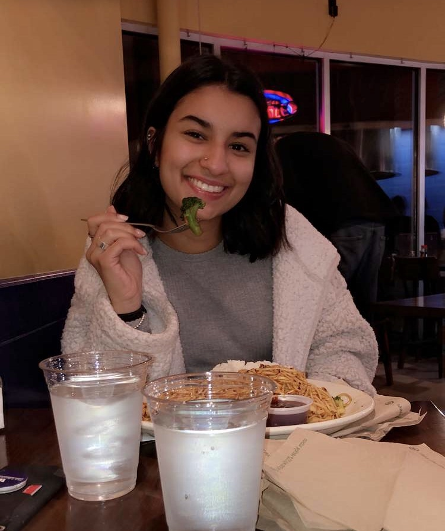

Mobile App Development Journey
In March of this year, I was diagnosed with Celiac disease. Let me tell you, being gluten free is no joke! And it's not made easier by the lack of crowdsourced information on safe foods and restaurants. I'm seeking to change that!

Seattle Cuisine
Being the foodie I am, I'm sharing my experiences at different restaurants across Seattle. Click to see my thoughts on different restaurants in the Seattle area!

Seattle Coffee Shops
As a college student always looking for a new place to study, it's essential to know the good spots! Click here to see my thoughts on coffee shops in the area.